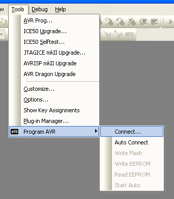
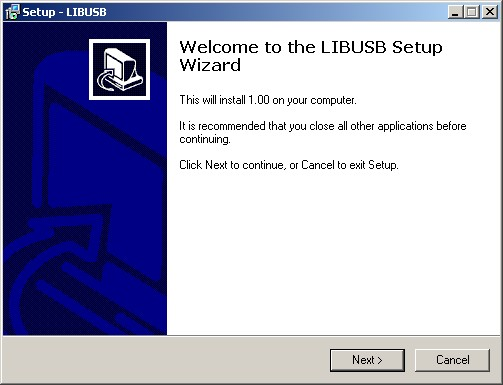
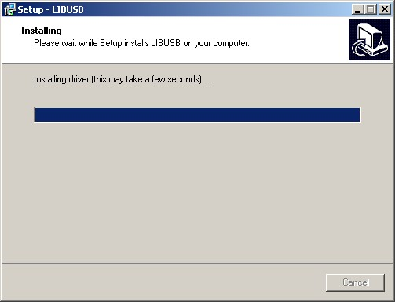
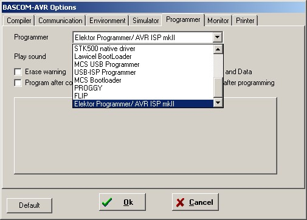

Status: fertig
Mit dem AVRISPmkII-Programmer k?nnen Sie direkt aus dem AVR-Studio heraus programmieren. Er nutzt die originale Atmel-Integration im AVR-Studio, keine Zusatzprogramme wie AVRProg oder ?hnliches.
Funktionen
- AVRISPmkII kompatibel (direkt aus AVR-Studio benutzbar)
- Alle AVR?s die ?ber ISP programmierbar sind unterst?tzt
- Gesamter Betriebsspannungsbereich (2,7-5,5V) programmierbar
- Target-Status wird mit LEDs angezeigt (nicht angeschlossen, falsch angeschlossen, korrekt angeschlossen)
- 1 khz - 3 Mhz ISP Frequenz
Download
Die Firmware ist im AVR USB-Lab Tool enthalten.Pinbelegung
MOSI = Pin 1 der 10-poligen Schnittstelle
VCC = Pin 2 der 10-poligen Schnittstelle
RESET = Pin 5 der 10-poligen Schnittstelle
SCK = Pin 7 der 10-poligen Schnittstelle
GND = Pin 8 oder 10 der 10-poligen Schnittstelle
MISO = Pin 9 der 10-poligen Schnittstelle
Benutzung
AVR Studio
Der ISP meldet sich mit dem Jungo-Treiber des AVR-Studios (muss bei der Installation des AVR-Studios mit aktiviert sein) bei Windows XP an.
W?hlen Sie aus dem Men? Tools im AVR-Studio -> Program AVR -> Connect.

Oder den Button .
Nachfolgend w?hlen Sie "AVRISPmkII" und USB.
Sollten Sie Probleme beim Flashen einzelner Controller haben, schicken Sie mir bitte ein Log. Eine Anleitung zum Erstellen eines solchen finden Sie hierBascom
Um den Programmer in Bascom nutzen zu k?nnen, muss das AVR-Studio incl. USB-Treiber (!) installiert sein.
Danach muss ein Treiber als Bridge zwischen dem AVR-ISP-mkII-Treiber und Bascom installiert werden. Diesen finden Sie unter dem Namen setuplibusb.exe im Bascom-Ordner.


Danach k?nnen Sie in Bascom den Programmer in Optionen als Elektor Programmer/AVRISPmkII ausw?hlen.
avrdude
Unter Windows muss zur Benutzung eines AVRISPmkII ein LibUSB-basierter Treiber installiert sein. Diesen finden Sie in der WinAVR-Installation im Verzeichnis "utils\libusb\bin".Deinstallieren Sie ggf. vorher den Jungo-Treiber, der vom AVRiStudio (mit)installiert wurde.
Anzeigeelemente
- gr?n-rote-Dual-LED: Sie zeigt den Status der Zielhardware an.
- aus: keine Zielhardware angeschlossen
- gr?n: Zielhardware richtig angeschlossen (wenn Jumper zur Targetversorgung gesetzt ist, leuchtet sie dauern gr?n)
- rot blinkend: Zielhardware falsch angeschlossen
- rot: Programmiervorgang l?uft
- blaue LED: Sie zeigt die PC-Verbindung an.
- dauernd aus: keine Verbindung
- an: Verbindung, aber kein Datentransfer
- sporadisch ausgehend: LED ist w?hrend des Datentransfers aus.
FAQ
Ich kann den Programmer mit der AVRISPmkII-Firmware nicht mehr in den Bootmodus versetzen.
Installieren Sie hierzu bitte bei der Installation des USB AVR Lab Tools den Filtertreiber mit.Achtung! Dieser kann durch Fehler im Windows-USB-Stack zu Problemen
mit anderen USB-Ger?ten f?hren, kann aber einfach wieder deinstalliert werden.Wenn dies nicht funktioniert, k?nnen Sie den Treiber von LibUSb-Win32 Filter Treiber installieren.
Betriebsysteme
MaxOS(X)
Linux
Windows XP
Windows XP 64
Windows Server 2008